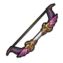

Arco da Lundra
Arco · Tier 4 · Nível 12
É pesado para retesar porque foi feito para dragões carnudos. Se gosta de destreza, passe longe!
Atributos
Ataque
144
Crítico
5%
Economia
Valor
9.700
Tempo de fabricação
17min
XP do comerciante
8.150
Trabalhadores: Dragoa lunar 9
Receita


Marcos do projeto
6
Tempo de fabricação -20%
16
Valor +25%
28
Desbloqueia projeto: Tabardo da Lundra
45
-8 Madeira
70
Chance de qualidade +1